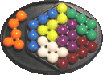
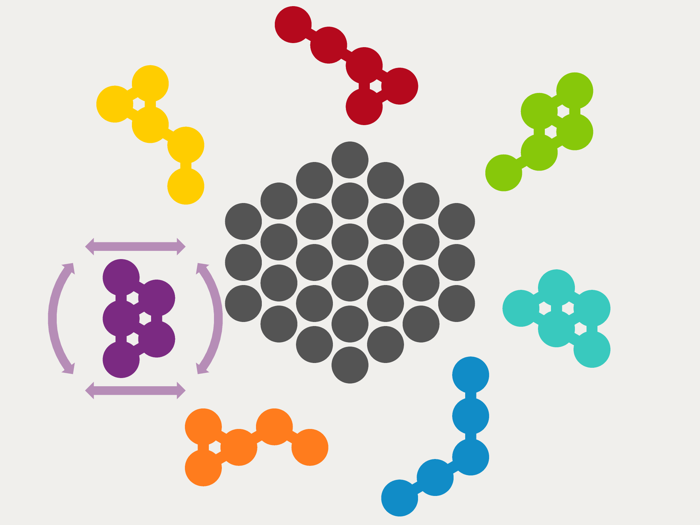

AtomPuzzle
Das Atompuzzle garantiert bleibenden oder immer wiederkehrenden Spaß beim Tüfteln der verschiedenen Lösungsmöglichkeiten.
Die Aufgabe scheint sehr einfach. Es müssen "nur" sechs Atompuzzle-Teile so in einem vorgegebenen Sechseck angeordnet werden, dass alle diese Teile genau hineinpassen.
Insgesamt hat das Atompuzzle sieben Teile, wobei es fünf verschiedene Formen gibt (jeweils zwei Formen existieren doppelt). Eine Form wird für die Lösung nicht benötigt und zur Seite gelegt. Somit ergeben sich grundsätzlich fünf Klassen von Lösungen. Nun gilt es für jede Klasse so viele unterschiedliche Lösungen zu finden wie möglich.
Eric hat dafür das Spiel "Molicula" für das iPhone und iPad erstellt:
Molicula on the App Store